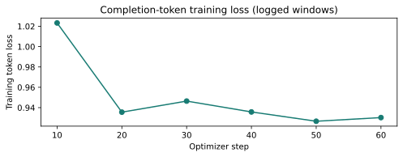
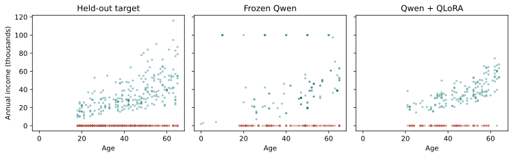
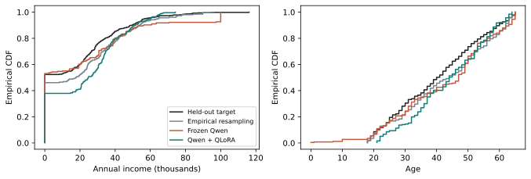

| age | employed | income | |
|---|---|---|---|
| 0 | 44.0 | 1.0 | 24.84 |
| 1 | 22.0 | 0.0 | 0.00 |
| 2 | 37.0 | 0.0 | 0.00 |
| 3 | 37.0 | 0.0 | 0.00 |
| 4 | 29.0 | 0.0 | 0.00 |
| 5 | 20.0 | 1.0 | 23.66 |
| 6 | 63.0 | 1.0 | 44.31 |
| 7 | 61.0 | 1.0 | 47.27 |
Language-model row generators
An executed comparison of frozen Qwen and a trained QLoRA adapter: generated rows, held-out fit, training loss and GPU costs.
Trex can generate numeric rows with a frozen language model, or first train a QLoRA adapter on the row-generation task. This example runs both routes with Qwen/Qwen2.5-0.5B-Instruct on an RTX 5070. It uses 800 training rows, 512 held-out rows and 256 returned samples per generator.
Result: one epoch of adaptation makes CSV generation reliable and reduces exact training-row copying, but does not improve overall distributional fit in this run. Empirical resampling has a smaller joint-distribution discrepancy than either language-model generator.
The GPU run was executed on September 27, 2026. All tables and figures below are recomputed from its saved data whenever this site is built; the complete prompts, completions and reproduction code are downloadable.
Data and task
Each row contains age, a binary employment indicator and annual income in thousands. The data-generating process has a point mass at zero income and a positive, age-dependent income distribution among employed people:
\begin{aligned} A&\sim\operatorname{Uniform}\{18,\ldots,65\},\\ E\mid A&\sim\operatorname{Bernoulli} \left(\operatorname{logit}^{-1}[-0.2+0.035(A-35)]\right),\\ Y&=E\cdot\operatorname{round} \left(\exp[3.2+0.025(A-35)+0.35Z],\,2\right), \qquad Z\sim N(0,1). \end{aligned}
The models see numeric training examples and the column names, not this formula or the held-out rows. Seed 20260927 generates the training, held-out and independent-reference samples in that order. Here are the first eight training observations:
The independent target draw is a finite-sample reference, not a fitted method or a lower bound on the discrepancy. Empirical resampling draws 256 rows with replacement from the same training set, using seed 725.
Frozen in-context generation
fit stores rows; it does not update the base model’s parameters. Each prompt shows eight randomly selected training rows and requests eight new CSV rows. Trex uses its plain-text row prompt, not the model’s chat template.
The following is the configuration executed on the GPU. The downloadable runner also records every prompt, completion, parsing attempt and timing.
Show Python
import numpy as np
import torch
from huggingface_hub import snapshot_download
from trex import SafetensorsLLMInContextGenerator, SafetensorsQLORAGenerator
model_directory = snapshot_download(
"Qwen/Qwen2.5-0.5B-Instruct",
revision="7ae557604adf67be50417f59c2c2f167def9a775",
allow_patterns=["*.json", "*.safetensors", "merges.txt", "vocab.json"],
)
training_rows = np.loadtxt("train.csv", delimiter=",", skiprows=1)
settings = dict(
model_path=model_directory, examples=8, rows_per_prompt=8,
max_new_tokens=384, max_attempts=128, temperature=0.7,
load_in_4bit=True, device="cuda",
)
frozen = SafetensorsLLMInContextGenerator(**settings).fit(
training_rows, column_names=["age", "employed", "income"],
)
np.random.seed(724)
torch.manual_seed(724)
frozen_rows = frozen.sample(256)sample parses numeric lines with the required number of columns, retries when insufficient rows have been collected, and returns the first requested number. It does not enforce binary columns, enforce the data-generating process’s support, or remove copied rows.
Training and reloading a QLoRA adapter
For a frozen matrix W, LoRA trains the low-rank update BA in W+BA. Here the base uses four-bit NF4 with double quantization and BF16 compute, and the adapter has rank 16, scaling parameter 32 and dropout 0.05. Generation reloads the same quantization configuration as training.
Show Python
adapted = SafetensorsQLORAGenerator(**settings).fit(
training_rows, column_names=["age", "employed", "income"],
)
adapted.fit_adapter(
output_dir="adapters/row-generator",
num_train_epochs=1, train_samples=512, rows_per_completion=4,
per_device_train_batch_size=1, gradient_accumulation_steps=8,
max_length=384, learning_rate=2e-4,
lora_r=16, lora_alpha=32, lora_dropout=0.05, seed=123,
)
np.random.seed(724)
torch.manual_seed(724)
adapted_rows = adapted.sample(256)The 512 training examples are prompt/completion pairs constructed solely from the 800 training rows, not 512 additional observations. Each completion contains four rows. Prompt and padding tokens have loss labels masked out; only completion tokens train the adapter. All examples retained supervised tokens after truncation: 31–47 tokens per example.
The completed run performed 64 optimizer steps, trained 8,798,208 adapter parameters, saved the adapter, and reloaded it for generation.

The training loss decreases from 1.023 in the first logged window to 0.930 in the last. It is not monotone, and a lower token loss does not guarantee a better joint distribution of numeric observations.
Actual generated rows
These are the first six returned rows, without selection, clipping, rounding or deduplication after generation.
| age | employed | income | |
|---|---|---|---|
| 0 | 51.0 | 1.0 | 38.64 |
| 1 | 52.0 | 1.0 | 42.14 |
| 2 | 53.0 | 1.0 | 32.18 |
| 3 | 51.0 | 1.0 | 38.64 |
| 4 | 52.0 | 1.0 | 42.14 |
| 5 | 52.0 | 1.0 | 42.14 |
| age | employed | income | |
|---|---|---|---|
| 0 | 37.0 | 1.0 | 36.64 |
| 1 | 28.0 | 1.0 | 20.65 |
| 2 | 58.0 | 1.0 | 63.99 |
| 3 | 36.0 | 1.0 | 32.43 |
| 4 | 23.0 | 0.0 | 0.00 |
| 5 | 36.0 | 1.0 | 20.23 |

Distributional fidelity
Distances are computed against the 512 held-out rows after standardizing each column by its training-set mean and standard deviation. Sliced Wasserstein uses 128 projections with seed 91. Smaller distances and correlation errors are better. All returned rows are finite; the seven support-invalid frozen-model rows remain in the primary metrics.
| Sliced W1 | Marginal W1 | Correlation error | Invalid support (%) | Employed-row copies (%) | |
|---|---|---|---|---|---|
| Generator | |||||
| Independent target draw | 0.078 | 0.075 | 0.051 | 0.000 | 0.000 |
| Empirical resampling | 0.158 | 0.161 | 0.105 | 0.000 | 100.000 |
| Frozen Qwen (ICL) | 0.198 | 0.160 | 0.549 | 2.734 | 74.576 |
| Qwen + QLoRA | 0.270 | 0.285 | 0.206 | 0.000 | 0.629 |
The frozen model’s sliced-Wasserstein distance is 0.198, versus 0.270 after QLoRA and 0.158 for resampling. Adaptation improves correlation structure, but worsens the marginal distributions: employment shifts to 62.1%, compared with 47.7% in the held-out sample, and mean income rises to 23.04 rather than 16.96 thousand.
| Mean age | Employed (%) | Mean income (thousands) | |
|---|---|---|---|
| Held-out target | 40.35 | 47.66 | 16.96 |
| Independent target draw | 41.55 | 51.95 | 17.73 |
| Empirical resampling | 42.89 | 53.91 | 21.05 |
| Frozen Qwen (ICL) | 42.72 | 46.09 | 21.21 |
| Qwen + QLoRA | 43.92 | 62.11 | 23.04 |

Copying also matters. Among generated rows with employment equal to one, 74.6% of frozen-model rows exactly match a training row, versus 0.63% after adaptation. This is a diagnostic, not a privacy guarantee. Zero-income rows naturally repeat because age takes only 48 integer values; counting every such match as memorization would be misleading. Resampling intentionally copies its entire output.
The summaries report the percentage of rows whose employment field is exactly one, rather than treating an invalid numeric indicator as a probability. This is one fixed-budget run, with no tuning on the held-out sample; it establishes the behavior of this example, not a general ranking of models.
Parsing reliability and cost
Frozen Qwen frequently writes prose or Python code instead of the requested CSV. 44 of its 62 attempts return no parseable rows. Adaptation eliminates empty attempts in this run, although neither model reliably returns exactly the requested row count. Valid CSV is distinct from a valid economic row.
| Returned rows | Generation attempts | Zero-row attempts | Parsed before truncation | |
|---|---|---|---|---|
| Frozen Qwen | 256 | 62 | 44 | 262 |
| Qwen + QLoRA | 256 | 38 | 0 | 256 |
| Wall seconds | Model-load seconds (included) | Peak Torch allocation (GiB) | |
|---|---|---|---|
| Operation | |||
| Train and save adapter | 91.67 | NaN | 1.20 |
| Frozen: generate 256 rows | 374.11 | 1.37 | 0.45 |
| QLoRA: generate 256 rows | 78.72 | 0.66 | 0.76 |
Sampling takes 374 seconds frozen and 79 seconds adapted; the latter also required 92 seconds of training. Timings include model loading, all unsuccessful generation attempts and parsing. Training includes loading, dataset preparation and saving. Initial model download is excluded. Memory is PyTorch’s peak allocated memory, not total GPU or system usage. These wrappers issue serial generation calls; this is not an optimized batched serving benchmark.
Reproduce the run
- Replication ZIP: all input and output CSVs, exact prompts/completions, training log, environment, scoring code and the source snapshot used for execution.
- Saved execution record and SHA-256 checksums.
- GPU runner and saved-data analysis.
Install Trex from this repository in a CUDA-enabled environment. The optional runtime dependencies are transformers, safetensors, accelerate, peft and bitsandbytes. The exact versions used here are:
| Executed version | |
|---|---|
| Python | 3.12.12 |
| torch | 2.9.1 |
| transformers | 5.6.0.dev0 |
| peft | 0.18.1 |
| accelerate | 1.12.0 |
| bitsandbytes | 0.48.2 |
| numpy | 2.4.2 |
| safetensors | 0.7.0 |
| datasets | 4.4.2 |
From the repository root:
python benchmarks/llm_generators/run.py --out tmp/llm-guide/executedThe script regenerates the data, downloads the pinned public checkpoint, trains and saves an adapter, reloads it, and records both generators’ outputs. The seed=123 argument controls construction of adapter-training examples; the current Trainer uses its default training seed 42. Sampling seeds are reset to 724. Use the complete runner to preserve the order of RNG-consuming operations. Library or kernel changes can still change sampled text.
The saved-data build verifies file hashes, reparses all raw completions, checks that prompting used only training rows, and reproduces the metrics. Neither it nor CI requires model weights or a GPU. Base-model and adapter weights are not included in the small replication download; the record includes the trained adapter’s hash.
For this low-dimensional task, resampling remains the more effective baseline. These APIs are useful for testing language-model generation, but a token likelihood is not a continuous tabular density, and a successfully trained adapter is not evidence of improved synthetic data.
Related: tabular GAN and diffusion models. API: SafetensorsLLMInContextGenerator, SafetensorsQLORAGenerator.